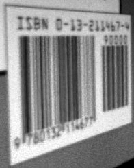
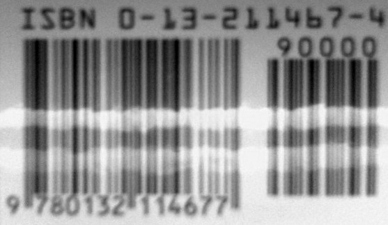
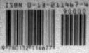

{% include JB/setup %}
{% raw %}
<div>

    <a name="toppage" class="calibre5" id="toppage"></a>
    <table width="100%" border="0" cellspacing="0" cellpadding="0" class="sfbody">
      <tr valign="top" class="calibre6">
        <td class="calibre7">
          <a name="MainContent" class="calibre5" id="MainContent"></a>
          <table width="95%" class="sfbody">
            <tr class="calibre6">
              <td class="v">
                <!--Copyright (c) 2002 Safari Tech Books Online-->
                <table width="100%" border="0" cellspacing="0" cellpadding="2" class="sfbody">
                  <tr class="calibre6">
                    <td valign="middle" class="v1" height="5">
                      
                    </td>
                  </tr>
                  <tr class="calibre6">
                    <td valign="middle" class="v1">
                      <table cellpadding="0" cellspacing="0" border="0" width="100%" class="sfbody">
                        <tr class="calibre6">
                          <td class="v"><span class="calibre9"> </span>
                   
                  <span class="calibre9">   </span>
             <span class="calibre9"> </span></td>
                        </tr>
                      </table>
                    </td>
                    <td class="v1"/>
                    <td valign="middle" class="v2"> 
           
          <span class="calibre9"><a target="_self" href="I_sect112_d1e27657.html" title="Previous section" class="calibre13"></a></span>
				
				 
				
				<span class="calibre9"><a target="_self" href="I_sect112_d1e27743.html" title="Next section" class="calibre13"></a></span></td>
                  </tr>
                </table>
                <div id="section" class="calibre15">
                  <table width="100%" border="0" cellspacing="0" cellpadding="0" class="sfbody1">
                    <tr class="calibre16">
                      <td valign="top" class="v3">Safari IT Books Language Constructs Functional Programming Haskell Safari IT Books Programming Programming Programming Bryan O'Sullivan  Donald Bruce Stewart  John Goerzen  O'Reilly Media, Inc. Real World Haskell, 1st Edition<a name="I_sect112_d1e27688" class="calibre27" id="I_sect112_d1e27688"></a><h3 id="title-IDAUH1SI" class="docSection1Title">12.4. Constraints on Our Decoder</h3><a name="x_vT" class="calibre27" id="x_vT"></a><p class="docText">Before<a name="I_indexterm12_d1e27693" class="calibre27" id="I_indexterm12_d1e27693"></a> we talk about decoding, let's set a few practical
    limitations on what kinds of barcode images we can work with.</p><a name="x_wT" class="calibre27" id="x_wT"></a><p class="docText">Phone cameras and webcams generally output JPEG images,
    but writing a JPEG decoder would take us several chapters. We'll simplify
    our parsing problem by <span class="docEmphasis">handling</span><a name="I_indexterm12_d1e27703" class="calibre27" id="I_indexterm12_d1e27703"></a> the netpbm file format. We will use the parsing combinators
    we developed earlier in <a class="docLink" href="binary_split_000.html#binary">Chapter 10</a>.</p><a name="x_xT" class="calibre27" id="x_xT"></a><p class="docText">We'd like to deal with real images from the kinds of
    cheap, fixed-focus cameras that come with low-end cell phones. These
    images tend to be out of focus, noisy, low in contrast, and of poor
    resolution. Fortunately, it's not hard to write code that can handle
    noisy, defocused VGA-resolution (640 x 480) images with terrible contrast
    ratios. We've verified that the code in this chapter captures barcodes
    from real books, using pictures taken by authentically mediocre
    cameras.</p><a name="x_yT" class="calibre27" id="x_yT"></a><p class="docText">We will avoid any image-processing heroics, because that's
    another chapter-consuming subject. We won't correct perspective (such as
    in <a class="docLink" href="#barcode_image_distorted">Figure 12-1</a>). Neither will we sharpen
    images taken from too near to the subject (<a class="docLink" href="#blurred_barcode_image">Figure 12-2</a>), which causes narrow bars to fade out;
    or from too far (<a class="docLink" href="#insufficient_detail">Figure 12-3</a>), which causes
    adjacent bars to blur together.</p><a name="barcode_image_distorted" class="calibre27" id="barcode_image_distorted"></a><p class="calibre37"><div class="calibre61"><h5 class="docTableTitle">Figure 12-1. Barcode image distorted by perspective, due to photo being taken
      from an angle</h5><a name="I_mediaobject12_d1e27722" class="calibre27" id="I_mediaobject12_d1e27722"></a></div></p><p class="docText"></p><br class="calibre48"/><a name="blurred_barcode_image" class="calibre27" id="blurred_barcode_image"></a><p class="calibre37"><div class="calibre61"><h5 class="docTableTitle">Figure 12-2. Barcode image blurred by being taken from inside the focal length
      of the camera lens, causing bars to run together</h5><a name="I_mediaobject12_d1e27730" class="calibre27" id="I_mediaobject12_d1e27730"></a></div></p><p class="docText"></p><br class="calibre48"/><a name="insufficient_detail" class="calibre27" id="insufficient_detail"></a><p class="calibre37"><div class="calibre61"><h5 class="docTableTitle">Figure 12-3. Barcode image contains insufficient detail, due to poor
      resolution of camera lens and CCD</h5><a name="I_mediaobject12_d1e27738" class="calibre27" id="I_mediaobject12_d1e27738"></a></div></p><p class="docText"></p><br class="calibre48"/>
<a href="21061538.html" class="calibre2"></a><ul class="calibre18"></ul></td>
                    </tr>
                  </table>
                  <table width="100%" border="0" cellspacing="0" cellpadding="2" class="sfbody1">
                    <tr class="calibre16">
                      <td valign="middle" class="v3" height="5">
                        
                      </td>
                    </tr>
                    <tr class="calibre16">
                      <td valign="middle" class="v3">
                        <table cellpadding="0" cellspacing="0" border="0" width="100%" class="sfbody1">
                          <tr class="calibre16">
                            <td class="v5"><span class="calibre33"> </span>
                   
                  <span class="calibre33">   </span>
             <span class="calibre33"> </span></td>
                          </tr>
                        </table>
                      </td>
                      <td class="v3"/>
                      <td valign="middle" class="v6"> 
           
          <span class="calibre33"><a target="_self" href="I_sect112_d1e27657.html" title="Previous section" class="calibre2"></a></span>
				
				 
				
				<span class="calibre33"><a target="_self" href="I_sect112_d1e27743.html" title="Next section" class="calibre2"></a></span></td>
                    </tr>
                  </table>
                  <table width="100%" border="0" cellspacing="0" cellpadding="2" class="sfbody1">
                    <tr class="calibre16">
                      <td valign="top" class="v6">
                        <span class="calibre33"></span>
                      </td>
                    </tr>
                  </table>
                </div>
                <!--IP User 2-->
              </td>
            </tr>
          </table>
        </td>
        <td class="calibre7">
                         
                      </td>
      </tr>
      <tr class="calibre6">
        <td colspan="3" valign="bottom" class="calibre7">
          <br class="calibre20"/>
          <p class="v4"></p>
          <br class="calibre20"/>
        </td>
      </tr>
    </table>
  </div>

{% endraw %}

